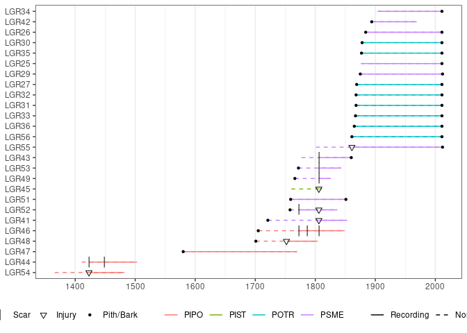

Basic tools to analyze forest fire history data (e.g. FHX) in R. This is designed for power users and projects with special needs.
Installation
You can install the released version of burnr from CRAN with:
install.packages("burnr")And the development version from GitHub with:
# install.packages("devtools")
devtools::install_github("ltrr-arizona-edu/burnr")Example
This is a basic example which shows you how to solve a common problem:
library(burnr)
# This gives you a basic plot. There are more advanced options. For example, we can color our plot by sample species.
data(lgr2_meta)
plot(lgr2,
color_group = lgr2_meta$SpeciesID,
color_id = lgr2_meta$TreeID,
plot_legend = TRUE
)
Support
Documentation is included in the code. If you’re new to burnr, our 2018 paper in Dendrochronologia is a nice survey of the package with many examples. We also have instructional vignettes on the project website, https://ltrr-arizona-edu.github.io/burnr/. And you can work through examples, with included data, in an R project hosted by @chguiterman on GitHub: https://github.com/chguiterman/burnr_demo. We’re working to enhance our instruction and add to these demos on the burnr website, so please send us requests for new tips and tricks, or create your own and share with us!
Citation
Please cite the original burnr paper if you use it in your research:
Malevich, Steven B., Christopher H. Guiterman, and Ellis Q. Margolis (2018) Burnr: Fire History Analysis and Graphics in R. Dendrochronologia 49: 9–15. DOI: 10.1016/j.dendro.2018.02.005.
Citations help us to identify user needs and justify additional time developing and maintaining burnr.
Development
Please file bugs in the bug tracker.
Want to contribute? Great! We’re following Hadley’s packaging workflow and style guide. Fork away.
If you’re not a developer, don’t worry! We also welcome help with documentation and tutorials.